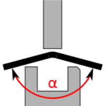

Cette boîte de dialogue permet d'insérer un pliage auxiliaire pour la ligne de pliage sélectionnée. Le pliage auxiliaire ne peut être utilisé que pour les profilés 2D. Un pliage auxiliaire comporte deux étapes de pliage.
- La première étape consiste à plier le pliage auxiliaire avec l'angle de pliage indiqué.
- La deuxième étape consiste à faire reprendre par la suite l'angle de pliage indiqué au pliage auxiliaire.
Tip: Cette fonction peut être utilisée par exemple pour les profils en U à côtés longs afin d'éviter les collisions des côtés avec l'outil ou la plieuse.
- Sélectionnez dans la vue 2D le pliage auquel vous souhaitez ajouter un pliage auxiliaire.
- L'option Déport sur le développement permet de définir l'écart du pliage auxiliaire avec la ligne de pliage.
- Sélectionner le bouton Insérer.
- Contrôler la collision sur la séquence de pliage à l'aide de la fonction Vérifier.
Cette option permet de définir l'angle de pliage (α) du pliage auxiliaire. Ultérieurement, le pliage est replié au cours d'une deuxième étape avec cet angle.
Fig.: Angle de pliage d'un pliage auxiliaire

Cette option permet de positionner ou d'immobiliser le bras de butée correspondant sans raccourcissement.
Cette option permet de positionner ou d'immobiliser le bras de butée correspondant avec un demi-raccourcissement.
Vous pouvez entrer le déport avec une valeur numérique ou en déplaçant le curseur.
- Effacer
- Inverser
- Insérer
Cette fonction permet de supprimer le pliage auxiliaire sélectionné.
Cette fonction permet d'inverser l'angle du pliage auxiliaire. La pièce à plier doit ensuite être posée sur l'outil inférieur en pivotant verticalement de 180°.
Cette fonction crée un pliage auxiliaire avec deux pliages à l'aide des options définies.